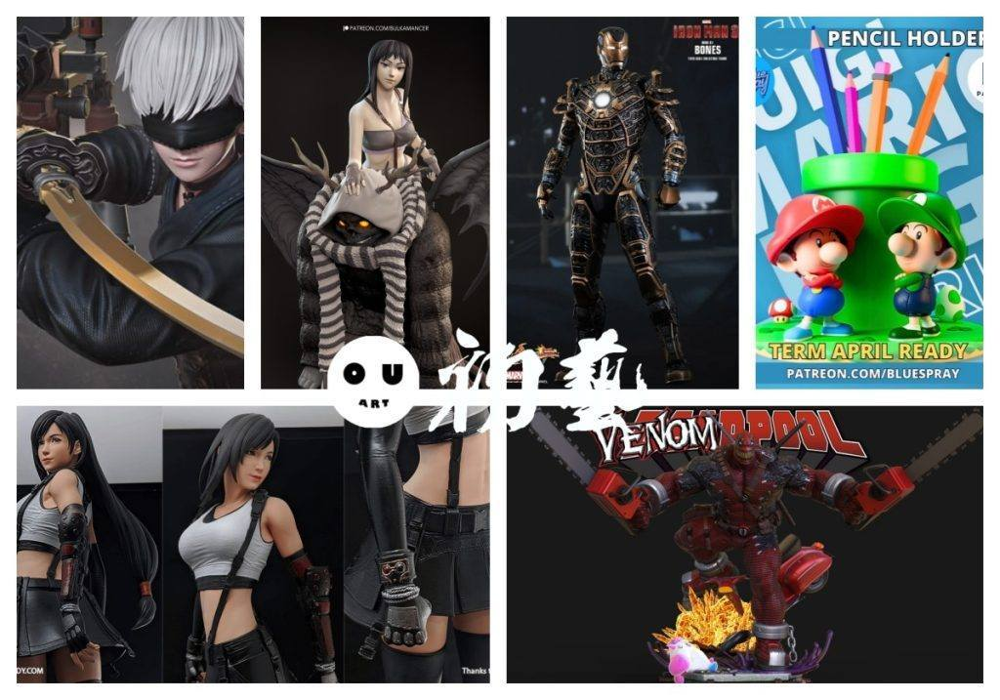
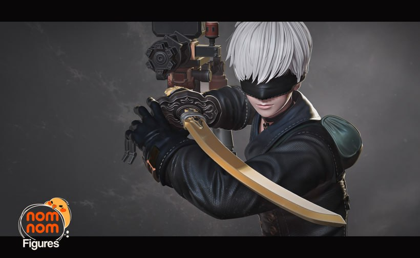
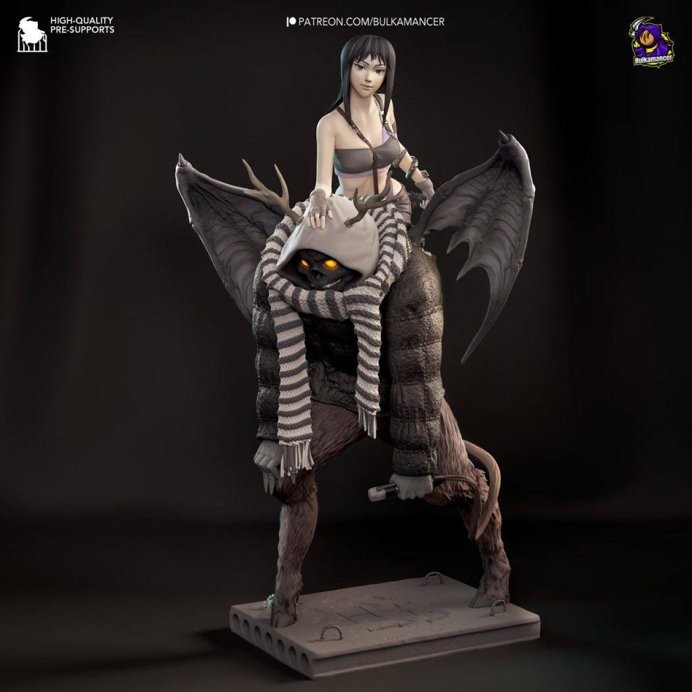
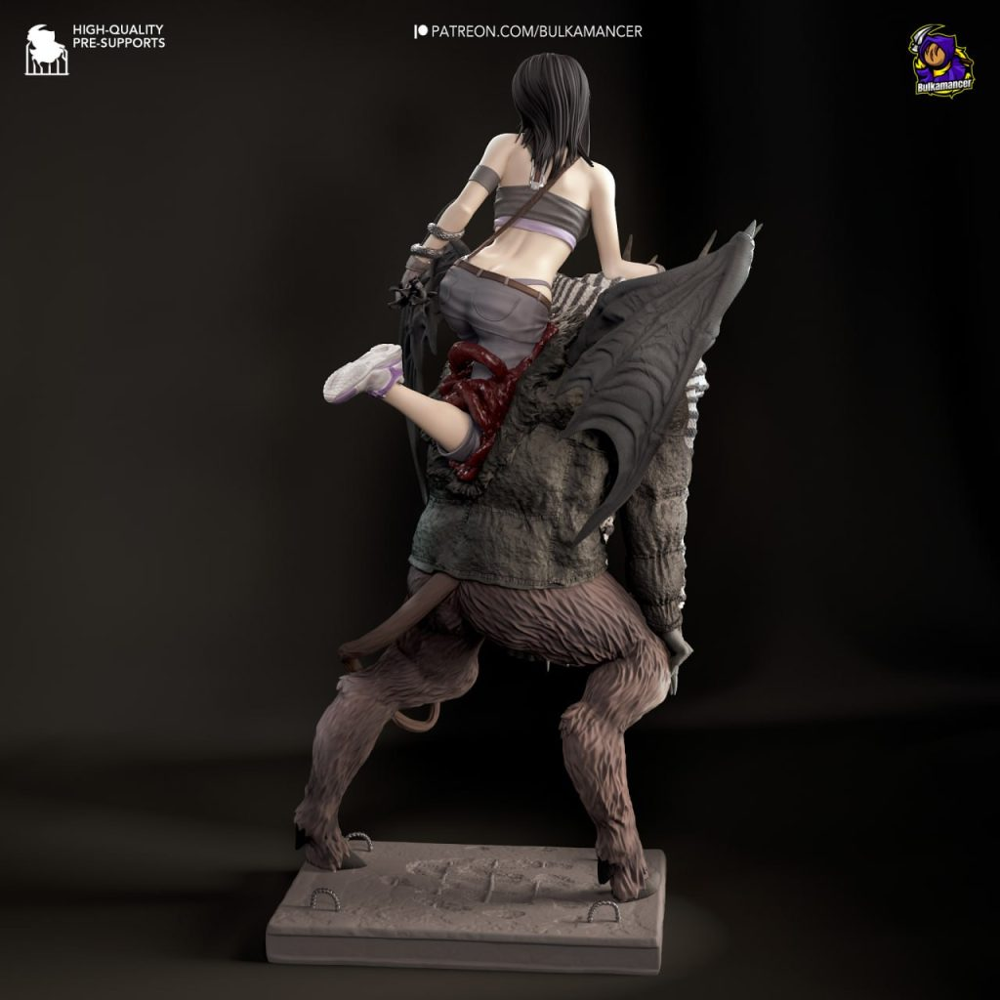
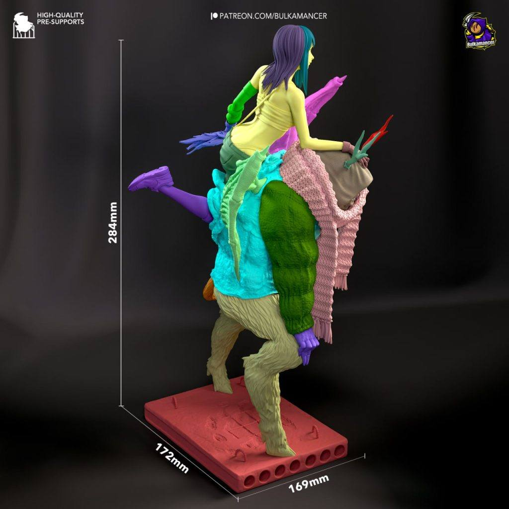
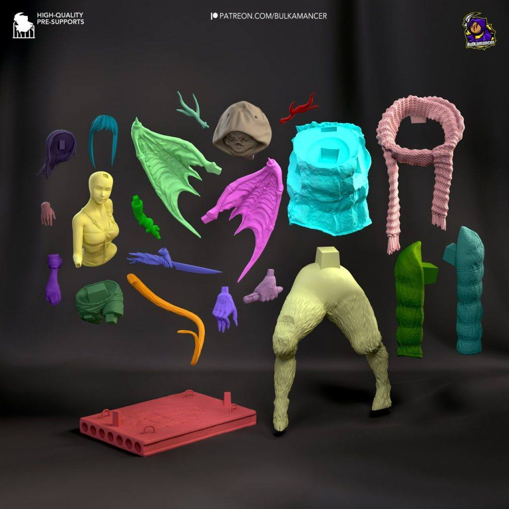
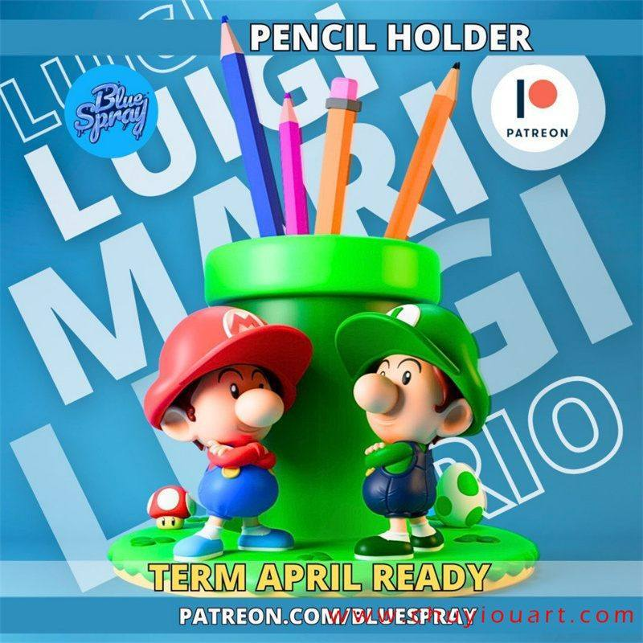
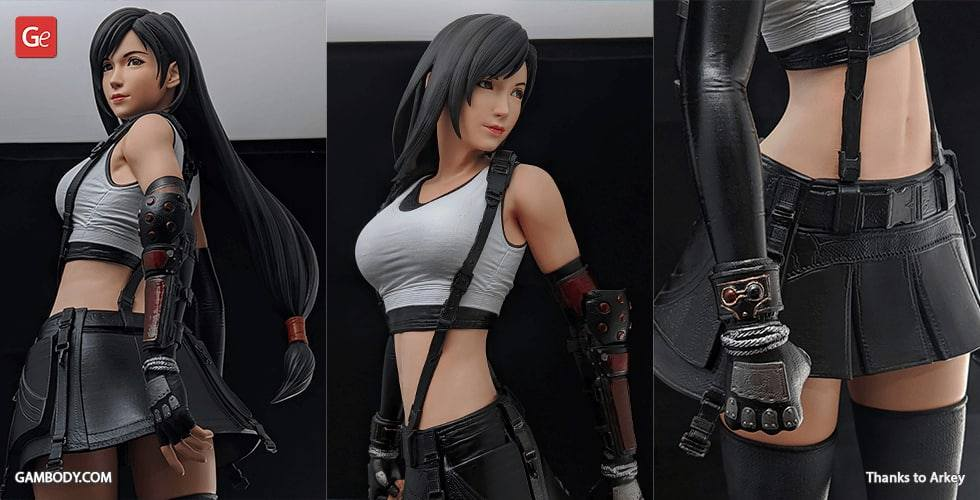
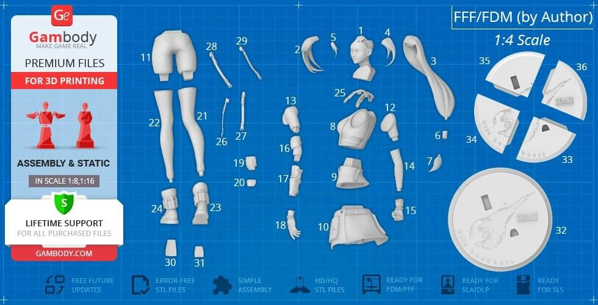
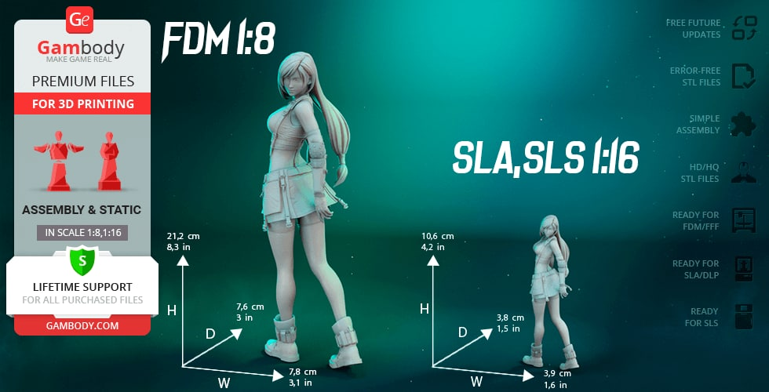

10月18日STl图纸文件分享
qfoz
1.尼尔——S9，nomnom出品，造型分件很好，尼尔系类好像听多了，几个主要人物都凑齐了。
链接：https://pan.baidu.com/s/1qdDlCQ9605SRj1F4CcGORQ
提取码：qfoz

2.异兽魔都——小春，异兽魔都的模型很少啊，这个小春和恶魔的造型很不错，推荐这个漫画给大家，非常不错的设定。
链接：https://pan.baidu.com/s/1_xbnwRpwU-C17fvf4jQ0RQ
提取码：zwq5




3.钢铁侠，应该是mk41吧，骨骼那款，这个精度是不错，不过造型太硬了，而且分件太烂了，作为参考例子是可以的，图片虽然是ht的，但是和ht关系不大。
链接：https://pan.baidu.com/s/1WhTLGdFyZJuiatShjkemHA
提取码：6sy7

4.马里奥笔筒，这个算diy和农场向，可以玩一玩的，用实用度。
链接：https://pan.baidu.com/s/16kx0ua_KwrpOCZmbqgzgvQ
提取码：66fa

5.最终幻想——蒂法，蒂法模型挺多的，这个模型比较接近游戏中的蒂法样貌，分件也不错。
链接：https://pan.baidu.com/s/1wEN0sY1FJtJeg86uEfIIvw
提取码：60pw



6.毒液死侍，漫威的套娃不得不说还是有看头的，这个精度挺不错，力量感爆棚。
链接：https://pan.baidu.com/s/1aW8VrYEsreokbctvZDXneA
提取码：mxx1

以上内容仅供个人使用（非商用）
ONLY for PERSONAL (NON-COMMERCIAL) use.
加群获得更多免费模型！